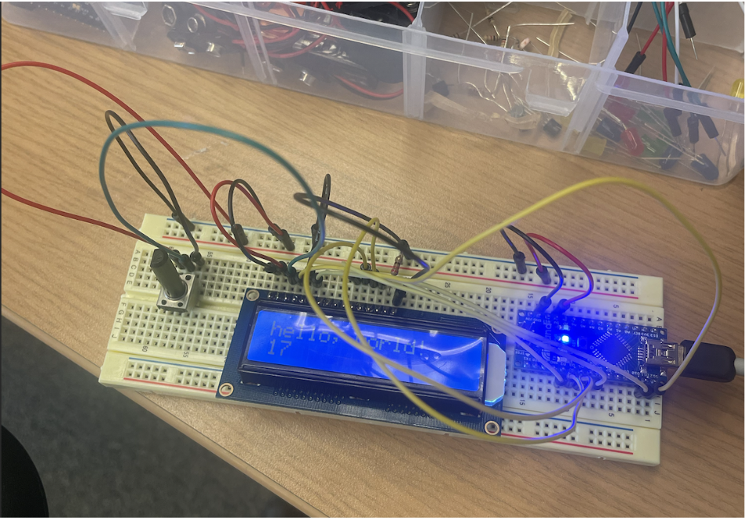
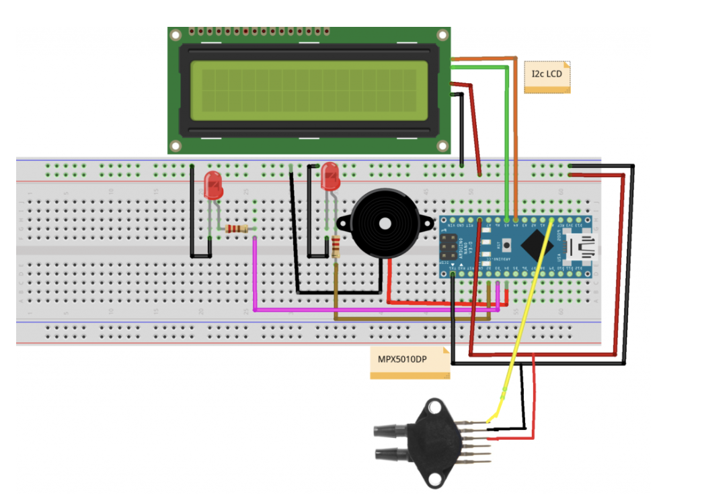

Our Development Log
Read up on our progress and challenges we have faced!
Week 1
Welcome to week 1 of SpiroVR development!
Our project has a couple of specifications required by our class, EECS 498: Extended Reality and Society. Each week for the remainder of development, we will try to address these specifications and how we have made progress in them. Here are the specifications:
1. Technical Sophistication: Does the software accomplish significant tasks with few bugs?
2. Novelty: Does the software accomplish something rare and non-trivial?
3. Social Impact: Does the software accomplish something impactful beyond the purely-recreational?
4. XR Emphasis: Does the software utilize VR or AR to its fullest extent in a way 2D couldn’t replicate?
5. Financial Sustainability: Does the software / website identify a clear path to long-term financial health?
Technical Sophistication
This week was mainly focused on the hardware side of our project. In order for our project to function, we needed access to a digital spirometer. These are pricey, so we decided to go the custom hardware route.
None of us have much experience with custom circuit design, so the first step of this was to get familiar with microcontrollers. For this project, we used an Arduino Nano (shoutout to Téa’s housemate, Dev, who let her borrow the circuitry needed to get the project rolling— it would have been impossible to do it without them!!).
Spirometer Design
There are a few DIY spirometer tutorials online. The ones we used were: Low Cost Spirometer : 5 Steps (with Pictures)Instructables › Workshop › Science DIY Arduino Nano SpirometerMaker Pro › arduino › tutorial › diy-arduino-nano…
We managed to get a device working this week that reads air pressure in pascals. Ideally, we need to convert this pressure unit into a volume unit, to measure lung capacity like a true spirometer, but a pressure measurement should work for now.
Here is a diagram of the reference circuit that we used:
Here is the circuit we came up with at the end. Note we did not include some of the components shown above, as we really only needed the data output from the pressure sensor, and not any of the bells and whistles:
Most of the components of this circuit are borrowed, but the vital component of this project is the differential pressure sensor, the MPX5010DP pressure sensor, which had to be bought online.
Finally, we needed to create the mouthpiece for the spirometer to attach to the pressure sensor. A typical spirometer has an intricate mouthpiece designed for accuracy of measurement. Due to cost limitations, we did not have a super intricate design. The mouthpiece ended up being two nested PVC pipes with vinyl tubing attached to the two ends of the PVC tube.
With that, the design of the spirometer was finished for the week!
Novelty & Social Impact
Our goal with this project is to bring some enthusiasm into something that is typically dreaded: hospital visits. Spirometry games already exist— this we know. But for patients who regularly visit the pulmonary unit, providing a unique and entertaining way to interface with a routine medical exam makes the overall experience at the doctor’s office less of a stressor in daily life.
We particularly see a benefit for pediatric patients who may be uneasy about going to appointments. We hope that SpiroVR can provide meaningful distraction to an otherwise stressful experience.
VR Emphasis
Unlike a regular spirometry game, our experience will have ways to spatially interact with the virtual environment— mechanics like aiming your breath output allow the VR emphasis shine.
Financial Sustainability
We would like to create a model where we can contract with hospitals to provide a better testing experience. With the contract, the addition of new minigames on a schedule would allow the content to be fresh and the cash flow to be sustainable.